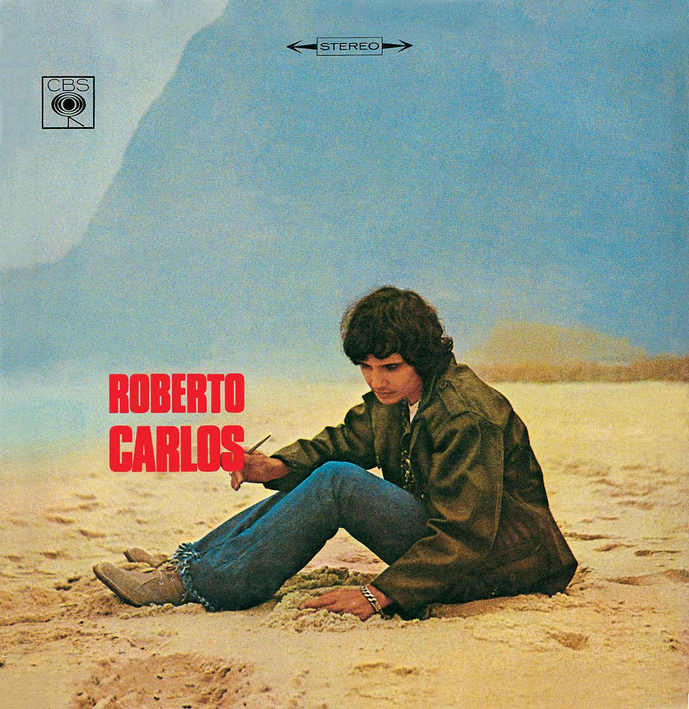
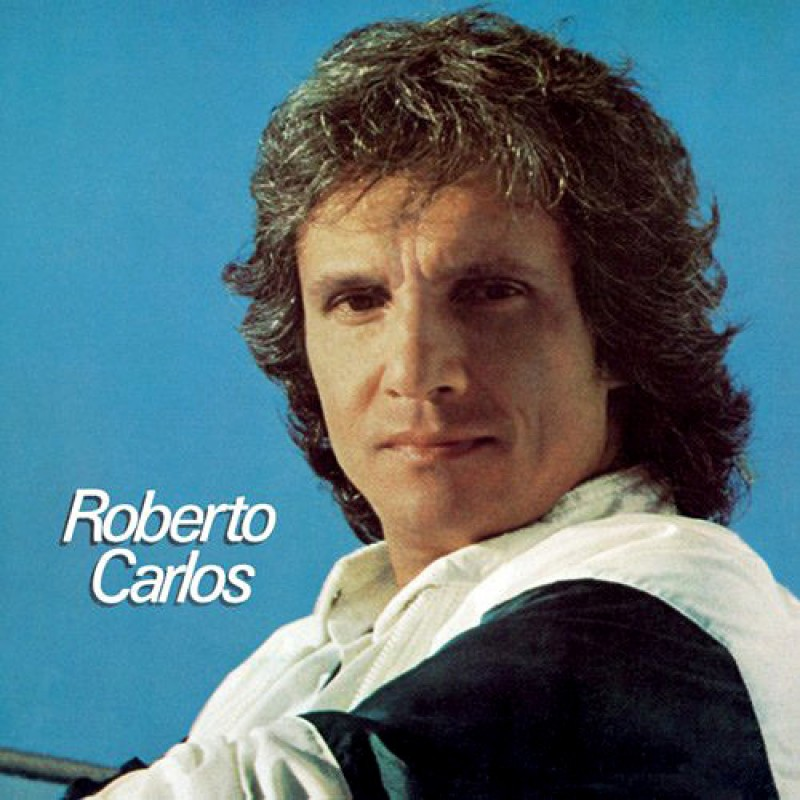
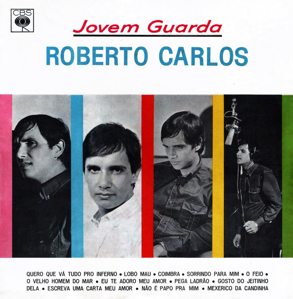

<!DOCTYPE html>
<html lang="en">
<!DOCTYPE html>
<html>
<head>
  <title>Roberto Carlos</title>
</head>
<body>
  </body>
</html>
  <head>
    <meta charset="UTF-8" />
    <meta name="viewport" content="width=device-width, initial-scale=1.0" />
    <title>Roberto página</title>
    <link rel="stylesheet" href="style.css" />
    <link rel="stylesheet" href="https://cdn.jsdelivr.net/npm/bootstrap-icons@1.11.3/font/bootstrap-icons.min.css">
  </head>
  <body>
    <header>
      <div class="header-left">
        <h1>Roberto Carlos</h1>
      </div>
      <nav class="header-right">
          <ul>
              <li><a href="#sobre">Sobre</a></li>
              <li><a href="#projetos">Projetos</a></li>
              <li><a href="#contato">Contato</a></li>
          </ul>
      </nav>
  </header>
    <main>
      <figure>
        
      </figure>
      <section class="about">
        <h2>RC: O rei da música brasileira</h2>
        <p>
            Roberto Carlos Braga (Cachoeiro de Itapemirim, 19 de abril de 1941) é um cantor,
            compositor e empresário brasileiro. Foi considerado pela revista Rolling Stone Brasil
            como o 6.º maior artista da história da música brasileira.
        </p>
        <div class="buttons">
          <button class="primary">Projetos</button>
          <button class="secondary">LinkedIn</button>
        </div>
      </section>
      <section class="projects">
        <h2>Projetos</h2>
        <div class="card">
          <div class="card-left">
            <h3>Impacto</h3>
            <p>
                Desses contatos surge, em 1958, a oportunidade de Roberto se apresentar no programa Clube do Rock,
                recém-criado por seu conterrâneo Carlos Imperial na TV Tupi. Ele era introduzido nessa atração como
                o Elvis Presley brasileiro, enquanto Tim Maia era o Little Richard nacional.
                Nos meses seguintes, Wilson Simonal e Erasmo Carlos também foram recrutados por Imperial,
                que, sem saber, estava com quatro futuros grandes nomes da MPB em mãos
            </p>
            <button class="secondary">Ver Projeto</button>
          </div>
          <div class="card-right">
            
          </div>
        </div>
        <div class="card card-reverse" style="flex-direction: row-reverse;">
          <div class="card-left">
            <h3>Start</h3>
            <p>
                Depois de dois compactos lançados no ano de 1962, ambos obtendo uma pequena circulação em algumas radios do Rio de Janeiro,
                Roberto Carlos põe no mercado em 1963 aquele que seria seu primeiro compacto de relativo sucesso no Rio de Janeiro e em algumas
                regiões do nordeste: “Splish Splash” e “Baby, meu bem”. A primeira música é uma versão de Erasmo Carlos
                para a canção de mesmo nome do roqueiro norte-americano Bobby Darin; a segunda, uma composição de Helio Justus e Titto Santo.
            </p>
            <button class="secondary">Ver Projeto</button>
          </div>
          <div class="card-right">
            
          </div>
        </div>
        <div class="card">
          <div class="card-left">
            <h3>Álbum</h3>
            <p>
                Roberto Carlos gravou seu segundo álbum do ano no fim de 1965.
                Lançado como “Jovem Guarda”
                devido ao nome do programa que estava estourado,
                as canções de maior sucesso do álbum são
                “Lobo mau”, “Mexerico da Candinha”, “Pega ladrão”,
                “Não é papo pra mim” e, é claro, a maior de todas:
                “Quero que vá tudo para o inferno”,
                faixa responsável por transformar Roberto Carlos
                em artista reconhecido de norte a sul do
                Brasil e mesmo em alguns países da América Latina,
                como Uruguai, Paraguai e Argentina.
            </p>
            <button class="secondary">Ver Projeto</button>
          </div>
          <div class="card-right">
            
          </div>
      </section>
      <section class="contact">
        <h2>Contato</h2>
        <section class="contact-form">
            <form>
              <div class="form-group">
                <label for="nome">Nome</label>
                <input type="text" id="nome" name="nome" required>
            </div>
            <div class="form-group">
                <label for="email">Email</label>
                <input type="email" id="email" name="email" required>
            </div>
            <div class="form-group">
                <label for="mensagem">Mensagem</label>
                <textarea id="mensagem" name="mensagem" rows="5" required></textarea>
            </div>
            <button type="submit">Enviar</button>
            </form>
          </section>
         <nav>
         </nav> 
          <p class="icon-text">Roberto Carlos 2025</p>
          <nav class="nav-a-icons">
            <a href="https://www.instagram.com/robertocarlosoficial/?hl=pt-br"><i class="bi bi-instagram" ></i></a>
            <a href="https://open.spotify.com/intl-pt/artist/7fAKtXSdNInWAIf0jVUz65?si=b6f18915c1fd416e"><i class="bi bi-linkedin"></i></a>
            <a href="https://www.robertocarlos.com/"><i class="bi bi-envelope"></i></a>
          </nav>
      </section>
    </main>
    
      <figure>
      </section>
      <footer>
          
        </footer>
        
      </figure>
  </section>
  </body>
  <script src="script.js"></script>
</html>
<div class="icons">
</div>
